GrapickNet：共享检测网络与多重约束匹配的协同设计
为实现成熟葡萄与采摘点的同步检测，保障果实品质并提升采收效率，该研究针对现有非同步分离检测方法中存在的流程复杂、模型冗余度高、效率低和计算资源消耗大等问题，提出一种葡萄成熟度和采摘点同步检测方法（a synchronous detection method for grape ripeness and picking point localizations, GrapickNet）。该方法由能同步检测葡萄成熟度与果梗关键点的改进模型（Grapick-YOLO12n）和基于多重约束规则的果串-采摘点匹配算法（a bunch-pick point matching algorithm based on multiple constraint rules, RBPM）组成。Grapick-YOLO12n 以 YOLO12n-pose 为基准模型，设计了边缘信息传递模块（edge information transfer module, EIFT）模块和 C3K2_RFAConv 模块，增强了模型对密集遮挡的葡萄果串成熟度和细小果梗的多尺度特征提取能力。RBPM 算法通过构建多重约束规则，实现了葡萄果串与采摘点的高精度空间关联。在涵盖多场景、多光照条件和多品种的自建温室葡萄 RGB 图像数据集（4 383 张）的试验结果表明，GrapickNet 在成熟度识别任务中的 mAP@0.5 达到 88.9%，采摘点检测的精确率为 82.7%。较基准模型（成熟度 mAP@0.5 87.0%，采摘点精度 77.8%）分别提升了 1.9 和 4.9 个百分点，且模型参数量仅为 3.33 M。在定位精度方面，X、Y 方向的平均误差分别为 2.51 像素和 5.37 像素，欧式距离平均误差为 6.39 像素。该研究为温室半结构化环境下葡萄自动化采收提供了一种高效、准确的方法参考。
成熟度依赖颜色与纹理，采摘点定位依赖果梗几何结构与空间位置。
薄膜折射、反射与阴影易造成果实颜色失真，削弱成熟度判别依据。
果串重叠、果梗细长交错与叶片遮挡，容易导致边缘缺失和误漏检。
核心问题：多尺度特征提取不足 与 离散果串—采摘点难以准确关联
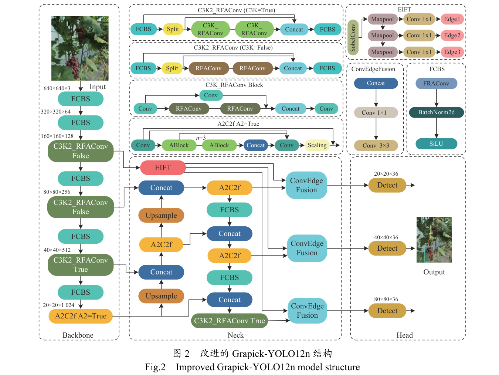
共享网络同步输出果串成熟度、果梗与采摘点候选，随后由 RBPM 完成实例级空间关联。
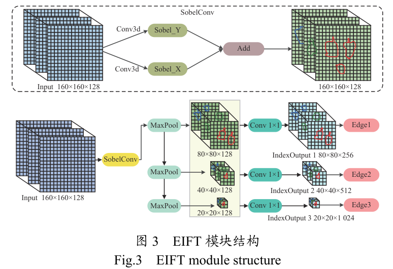
叠加水平与垂直梯度响应，捕获模糊果串轮廓和细长果梗边缘。
在下采样过程中突出局部显著边缘，避免过度平滑细节。
Edge1、Edge2、Edge3 分别注入 Neck 对应分辨率的融合节点。
压缩并融合通道
提取局部上下文
调整输出维度
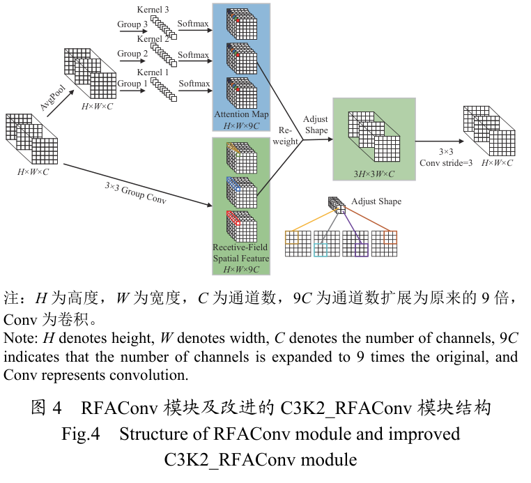
全局平均池化、组卷积与 Softmax 生成空间注意力权重。
组卷积、归一化与 ReLU 构建非线性感受野特征表示。
逐元素相乘后，经步长为 3 的标准卷积调整尺度。
以 RFAConv 替换标准 Conv2d 卷积层，作用于 Backbone 与 Neck。
当 C3K=False 时，以 RFAConv 替换 Bottleneck 层。
当 C3K=True 时，以 C3K_RFAConv 替换原 C3K。
RFAConv 扩大上下文感知范围，EIFT 补充边缘细节，融合特征最终进入 Detect 层。
成熟果串与可见采摘点
遍历候选并升序排列
位置与距离联合判断
无候选则判定不可采摘
采摘点纵坐标高于果串检测框左上角顶点的纵坐标。
采摘点位于对应果串的检测框内。
采摘点与果串上边框中心点的欧式距离小于 20 像素。
2025 年 6—8 月分 10 次采集
拍摄距离 0.3～1.5 m
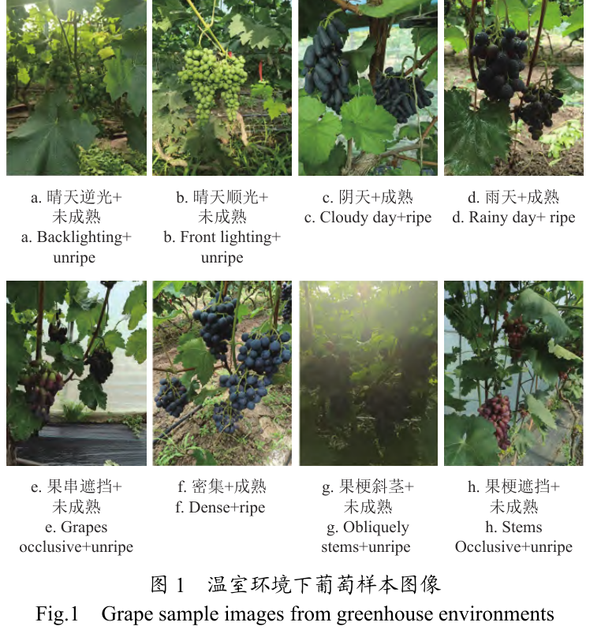
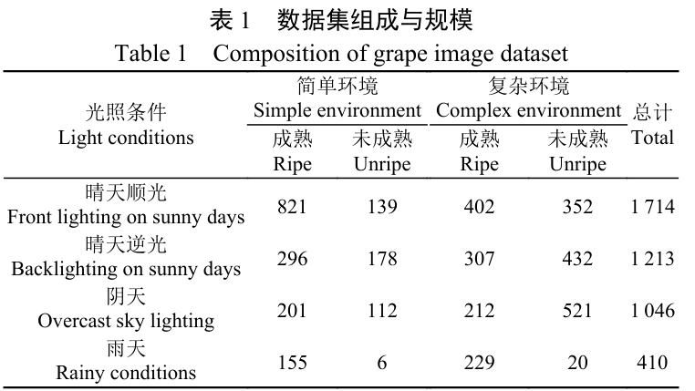
训练集、验证集、测试集按 6:3:1 随机划分；LabelMe 标注 Frgc、Urgc、stem 与 point。
输入 640×640 像素，训练 300 轮；SGD 动量 0.937，随机种子 0。
P、R、mAP、采摘点距离误差、FLOPs、参数量与 FPS。
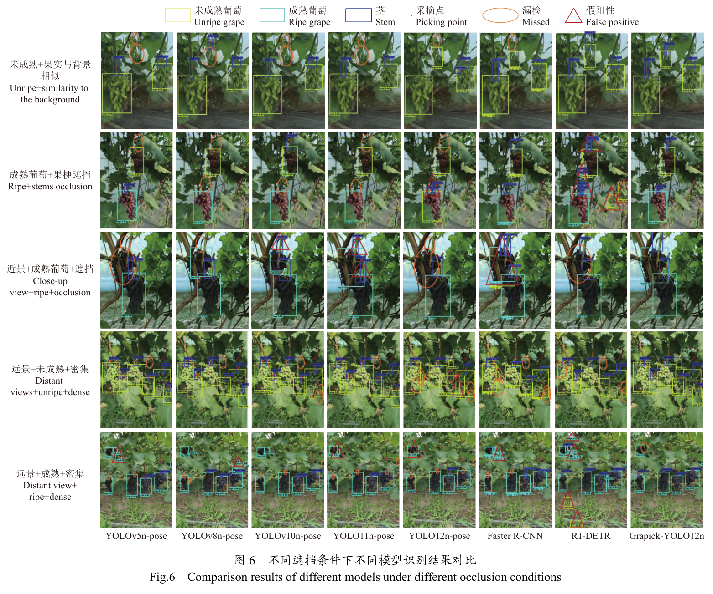
Grapick-YOLO12n 的检测框更紧凑，在远景密集、果梗遮挡和背景相似场景中减少误检与漏检。
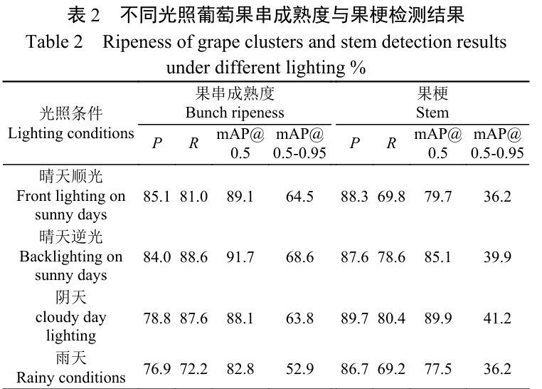
雨天两项结果均下降；阴天果梗结果最高，但成熟度分类受色彩区分度影响。
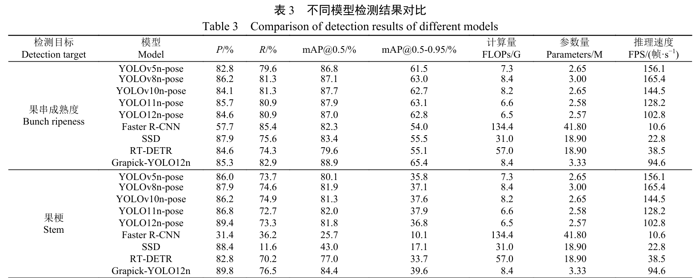
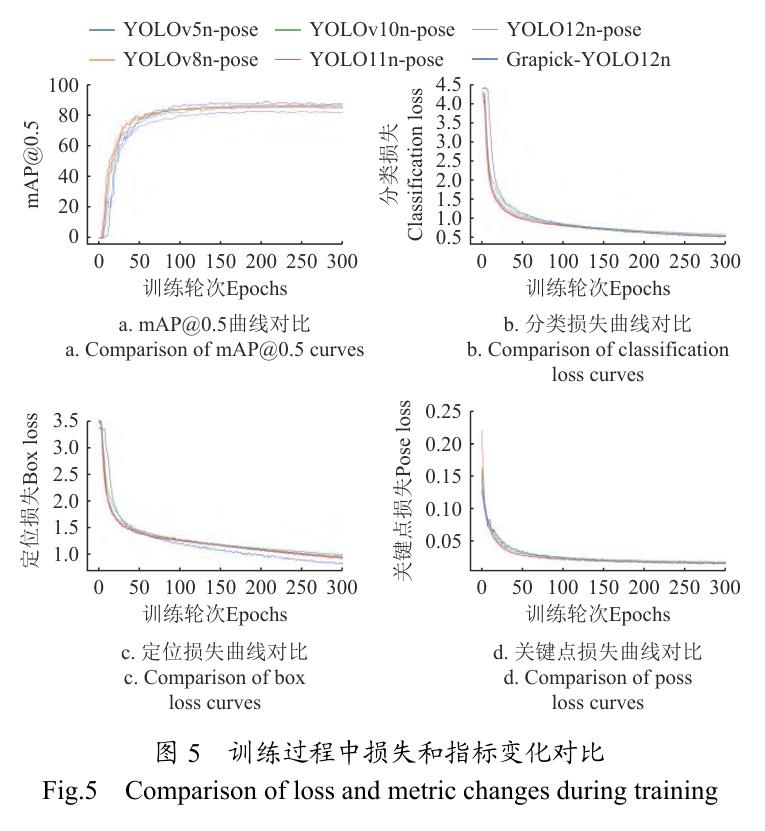
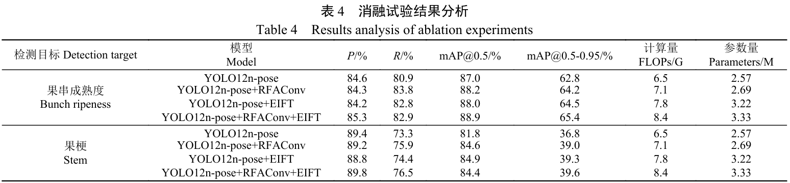
最终定位损失 0.834，较基线降低 9.1%；分类损失与关键点损失分别为 0.532 和 0.016。
联合模块使成熟度 P、R 提高 0.7 和 2.0 个百分点，果梗 P、R 提高 0.4 和 3.2 个百分点。
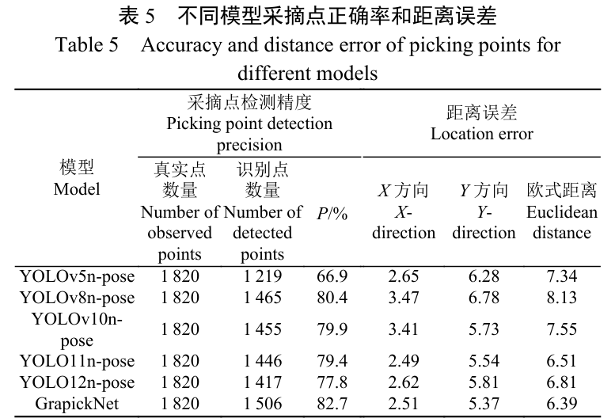
物理定位误差 8.25～13.20 mm
处于末端执行器 15 mm 容错半径内
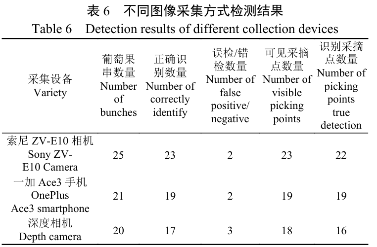
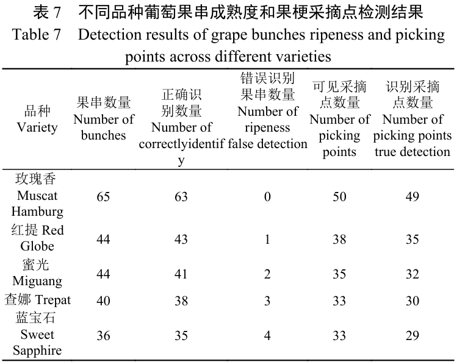
成熟度与采摘点平均检测精确率分别为 89.2% 和 94.9%；索尼 ZV-E10 相机整体表现最好。
原文报告各品种成熟度与采摘点平均检测精确率分别为 94.9% 和 92.1%。
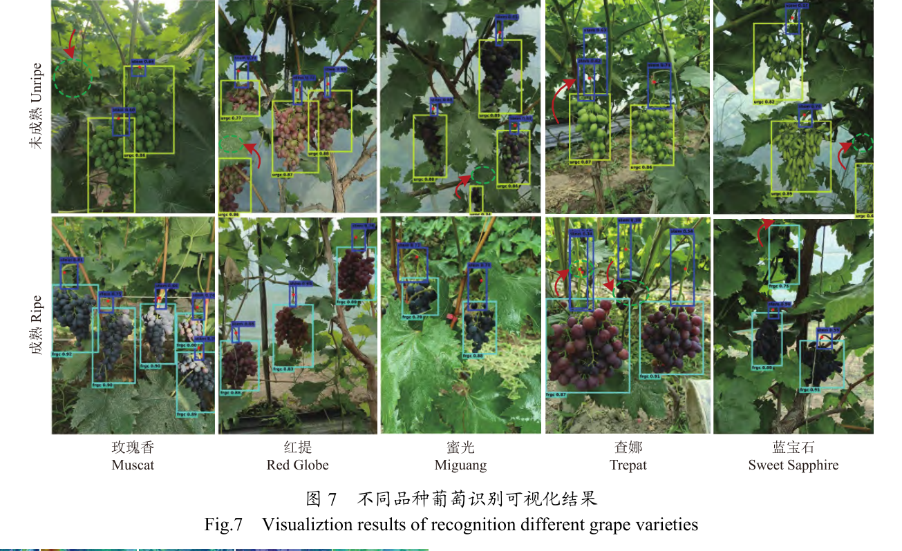
模型可在多种光照、密集、遮挡与远景条件下同步输出果串成熟度和采摘点。
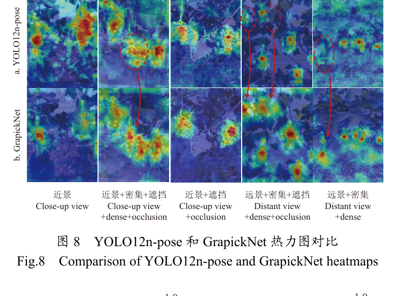
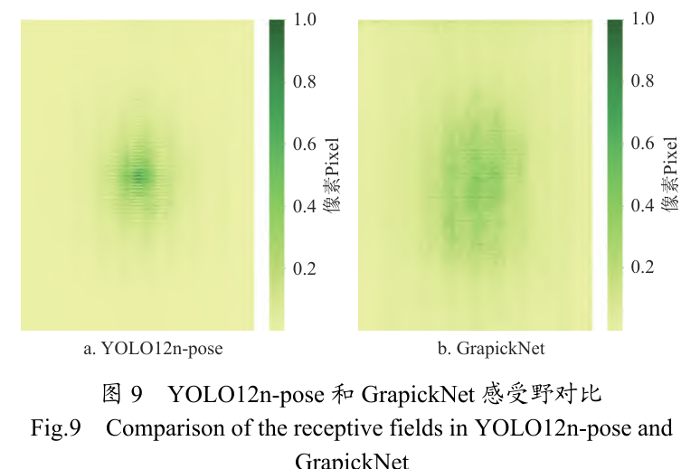
高阈值 0.99 下，GrapickNet 的高亮区域比例达到 0.9598；目标响应更集中，感受野分布更均衡、广阔。
EIFT 的边缘传递与 RFAConv 的上下文建模，共同增强复杂温室中的多目标特征感知。
葡萄成熟度与采摘点同步检测方法
共享检测 · 边缘增强 · 感受野建模 · 多重约束匹配